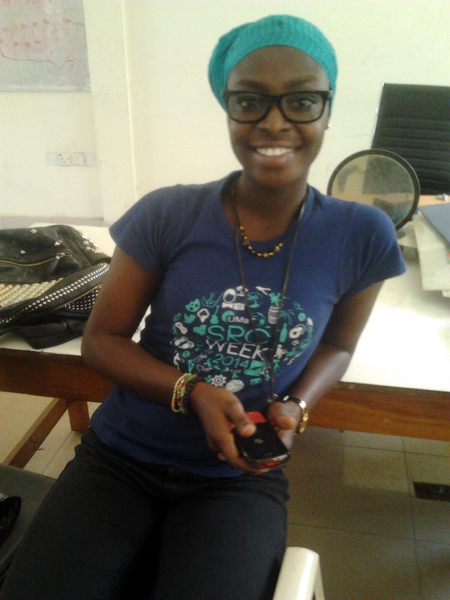
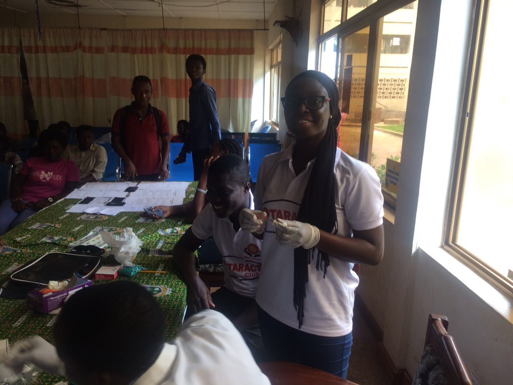
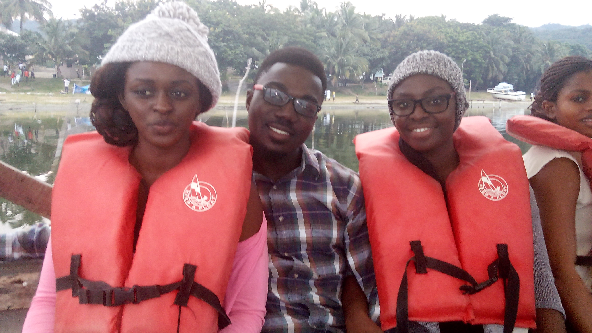
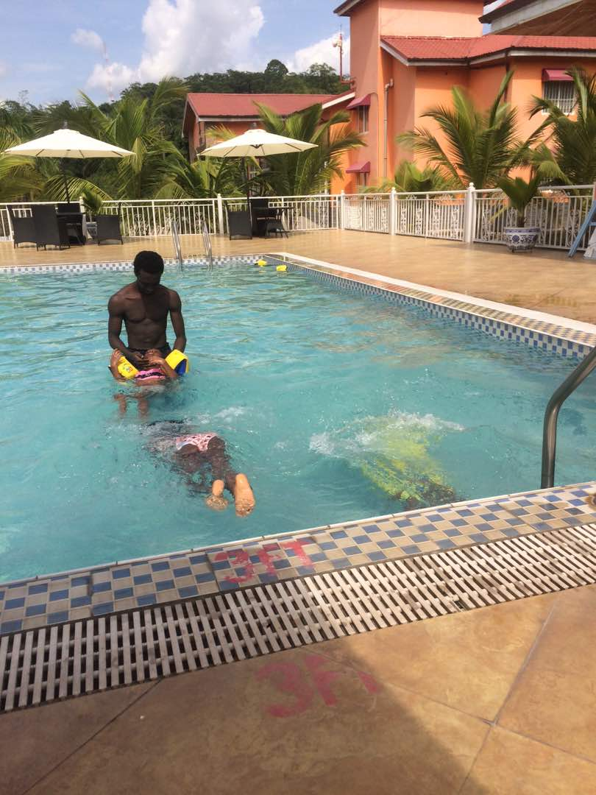
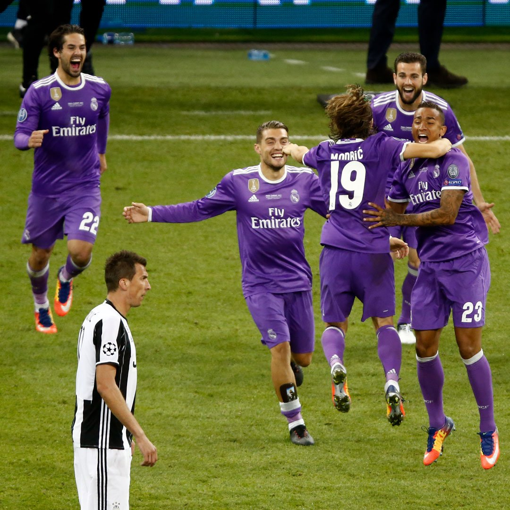
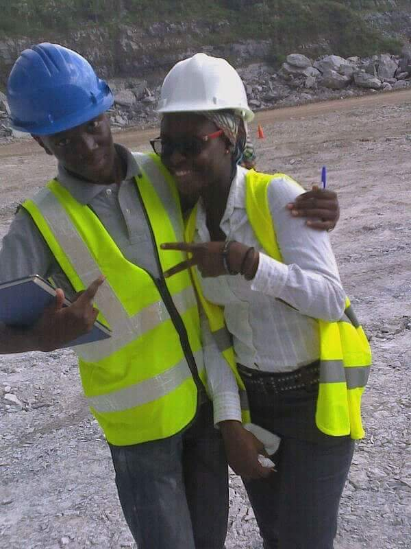

Fatimatu Iddrisu
+233206616983
 fatidd2000@yahoo.com
fatidd2000@yahoo.com
Accra, Ghana
Personal Summary
I easily adapt to changing environments; I am results driven, a good team player and ready to learn;
I have worked on several projects ranging from community development, water and sanitation, geometallurgy and
agricultural innovation due to my strong affinity for leadership, innovation, entrepreneurship and humanitarianism
On behalf of the Rotaract Club of UMaT, Ghana I won the "Rotary International Presidential Citation Award for Rotarct Clubs" in the 2015/2016 Rotary Year
The greatest achievement for me however, is doing what people say I can't!
In a nut shell, I'm a goal getter and just me!
Education
(September 2013 – May 2017) University of Mines and Technology (UMaT), Tarkwa, Ghana
Programme: Bachelor of Science in Geological Engineering
Relevant Courses: Fluid Mechanics, Petrology, Mineralogy, Hydrogeology, Geophysics, Business Entrepreneurship,
Principles of Economics, Introduction to Management, Petroleum Geology, Mining Geology and Laws, Soil and Rock
Mechanics
Work Experience
(June 2015 - August 2015 ) Intern @ Goldfields Ghana Limited, Tarkwa, Ghana
Gained experience in surface mining operations such as database management, grade control, slope monitoring,
core logging, geochemical sampling, quality assurance quality control
(June 2016 - July 2016 ) Intern @ Adamus Resources Limited, Nzema, Ghana
Gained experience in surface mining operations such as drill and blast, database management, grade control,
environmental management, quality assurance quality control and assaying
Skills and Interests
Skills:
Intermediate skills in Microsoft Word, Excel, Access and Powerpoint
Basic skills in html and java programming
Problem solving, design thinking and prototyping
Familiar with Surpac, ArcGIS Softwares
-





 Fatimatu Iddrisu
Fatimatu Iddrisu
 @halikel98
@halikel98